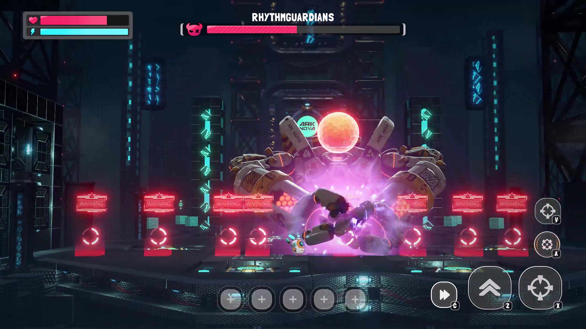

Project O
2.5D 플레이 환경과 기믹 연출


프로젝트 소개
플레이 공간의 시야와 발광 신호를 정리하고, 이동 구간에서 보스 패턴까지 이어지는 장면을 Unity에서 구성했습니다.
담당 업무
- 상용 에셋 기반 로비·전투 환경 구성, 배치와 레벨 구성
- 셰이더·머티리얼 조정, 텍스처 수정, 일부 모델링 보정, 라이팅·후처리
- 기믹 모델링·애니메이션·연출 구현 및 AI 기반 기믹 콘셉트 아트 제작
- Timeline 컷신, Cinemachine 게임플레이 카메라, 이벤트 전환, 소개 영상 편집
기여 범위 및 사용 리소스
- 환경에 상용 에셋 사용. 개별 패키지명은 미확인.
- AI 사용은 기믹 콘셉트 아트 단계에 명시됨.
- 보스·플레이어 모델, 리그, 모션, UI의 개별 제작 분담은 미확인.
기술 및 툴
Gallery
이동 구간과 보스 전환
점등되는 구조와 카메라가 이동 방향을 보여주고 이후 보스 등장과 경고 패턴으로 이어집니다.
초기 비주얼 시안
초기 버전에서 배경 스타일과 카메라를 맞춘 구간입니다.